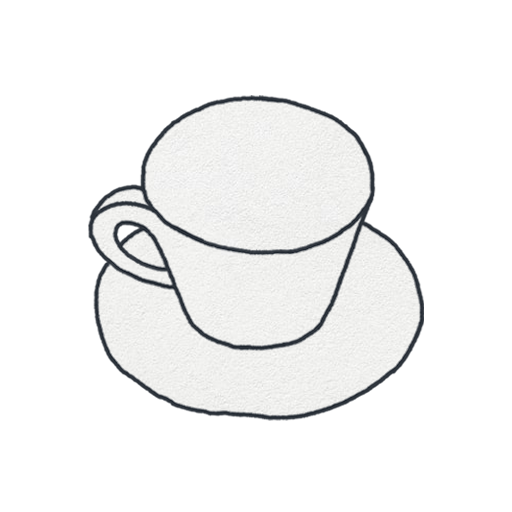
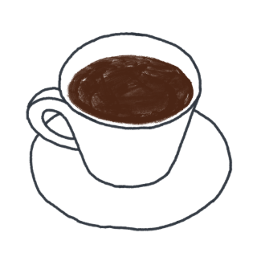
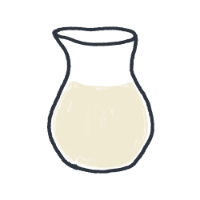
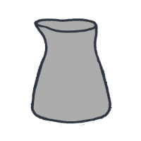
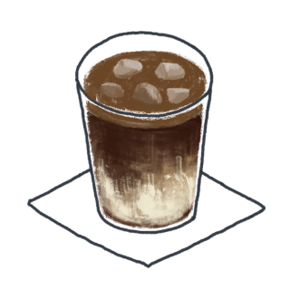

DESIGN SYSTEM BOARD · 2026 RESTORATION
CUPPO
커피 기록 앱 · 2023 개인 프로젝트
PM · UX Research · UI Design / iOS · Android
PM · UX Research · UI Design / iOS · Android
종이 텍스처 위에 손그림 커피 일러스트를 얹고, 가로 카드 한 장을 필름 한 컷처럼 쓰는 앱. 이 보드는 원본 에셋과 타입 정리표에서 추출한 값을 그대로 옮기고, 어긋난 위계만 정돈한 결과입니다.
 iOS
iOS

ANDROID01 · COLOR
팔레트 8색
종이 두 장(라이트·다크)과 잉크 두 단계, 필름 카드 채움 하나, 커피 브라운 액센트 두 단계. 경계선은 색을 새로 만들지 않고 currentColor 20%로 파생시켜 두 테마에서 같은 규칙으로 동작합니다.
{{ c.name }}
{{ c.hex }}
{{ c.use }}
02 · TYPE
타입 4단계
원본은 Goyang 한 벌에 12–22px. 웹에 배포 가능한 Goyang이 없어 라틴·숫자는 Jost, 한글은 Gowun Dodum으로 대체했습니다. 기하학적 원형 제로와 얇은 획이라는 원본의 성격은 유지됩니다.
LATIN & NUMERALS — JOST 300
2o22
FEBRUARY
0123456789 · CUPPO
HANGUL — GOWUN DODUM
오늘의 커피는?
#아메리카노 · 따뜻하게 · 우유거품
{{ t.px }}
{{ t.sample }}
{{ t.role }}
{{ t.spec }}
03 · LAYOUT
간격과 프레임
STATUS 44
FILM CARD 335 × 190
GAP 16
NEXT CARD
TAB BAR 83
{{ sp.k }}
{{ sp.v }}
04 · ILLUSTRATION
일러스트 인벤토리
메뉴 8종 × 온도 2종이 기본 잔이고, 장식 선택이 변형 파일을 부릅니다 — 따뜻한 잔의 휘핑은 _wip, 아이스의 얼음 추가는 _ice. 아메리카노는 휘핑 변형이 없어 기본 잔을 유지합니다.
05 · COMPONENTS
컴포넌트 6
01 FILM CARD
#아메리카노
2022.02.10

출근 전 한 잔
08:20
#아메리카노
2022.02.15
PHOTO
야근 각오
21:05
16:9 가로 카드. 위 행은 태그·날짜(12px), 아래 행은 제목(14px)·시각. 원본에서 채움색 #333이던 카드는 사진 기록 전용 상태로 재정의했습니다.
02 SEGMENTED TABS + 03 OPTION TILE
온도
우유
시럽
장식
없음

우유
우유거품 ✓원본 선택 타일에는 선택 상태 표시가 없었습니다. 브라운 1px 테두리 + 5% 채움 + 우상단 체크로 상태를 명시했습니다.
04 TAB BAR

 카드
카드
아이콘만으로는 의미가 서지 않아 활성 탭에만 10px 라벨을 붙였습니다. 미니멀은 유지하고 모호함만 제거하는 절충입니다.
05 BOTTOM SHEET
레시피 편집
카드 이미지로 저장
기록 삭제
월 선택·편집·삭제는 모두 같은 시트 규격(종이 텍스처, 상단 핸들, 17px 행 패딩)을 씁니다.
06 TAG ROW + TOAST + BUTTONS
전체
#아메리카노
#카페라떼
#핫초코
2월 28일 기록이 저장됐어요
저장
공유하기
주 버튼은 브라운 면, 보조 버튼은 헤어라인 테두리. 원본에 없던 유일한 면색 요소이며, 저장·다음처럼 흐름을 끝내는 동작에만 씁니다.
06 · DARK
다크 테마
원본 에셋에 다크 종이와 다크 커피링이 함께 있었습니다. 잉크와 종이를 뒤집고 경계선은 currentColor 파생값을 그대로 쓰기 때문에 규칙이 한 벌로 유지됩니다. 액센트만 #C08A5C로 밝혀 대비를 확보합니다.
LIGHT

오후 3시의 리셋
DARK
오후 3시의 리셋
07 · DIAGNOSIS
원본에서 손본 것
'타이포·간격·정렬만 정돈' 범위를 지켰습니다. 아래 여섯 가지 외에는 원본 구성과 화면 논리를 그대로 유지했습니다.
#원본정돈
{{ d.n }}
{{ d.before }}
{{ d.after }}
08 · NEW
2026에 더한 기능
당시 기술로 못 넣었던 것과, 기록이 쌓였을 때만 가능한 것들. 모두 기존 화면 문법 안에서 동작합니다.
{{ f.n }}
{{ f.title }}
{{ f.body }}
{{ f.screen }}